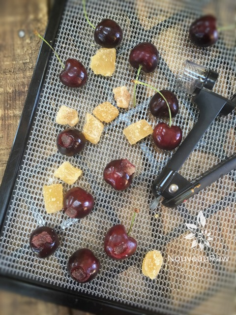
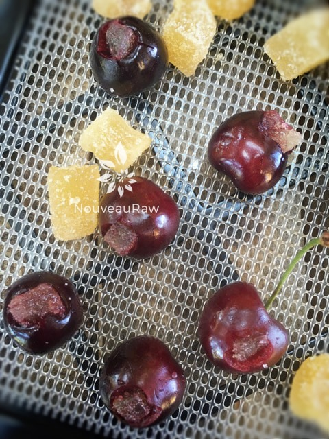
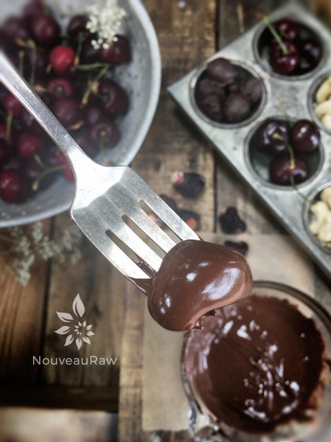
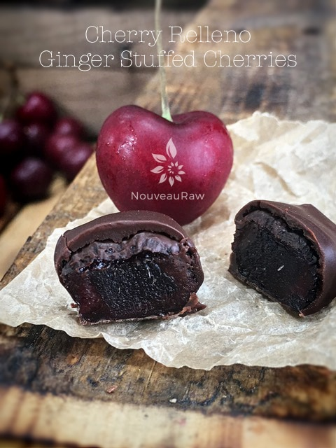

Crystalized Ginger Cherry Relleno

~ raw, vegan, gluten-free, nut-free ~
Take a ripe, plump and juicy red cherry, pop the pit out, slide a piece of dried ginger in the space created by the missing pit, place it on the mesh sheet that comes with the dehydrator and dehydrate away.
Then once it is completely dry, drown it in a pool of rich, luxurious dark chocolate… oh, but wait there is more… like the chocolate hugs the cherry which is hugging the ginger, sprinkle a light fairy dusting of crystallized ginger on top! And that my friends are a Crystalized Ginger Cherry Relleno! It is quite an experience to behold and taste.
It is hard to believe, but another cherry harvest has come and gone. I must admit that creating cherry rellenos has become one of my favorite traditions. The sweetness from the dark chocolate and cherry are a perfect duo to stand up to the heat of the ginger.
You will notice below that I didn’t list out quantities of the ingredients. Use what you have or how many you want to make. You can make as little as 2 (but that would just be silly) or make 30. So, I am going to let you go now because I don’t want to take up any more of your time… you need to use your time wisely by making these rellenos. :)
Ingredients:
- Wash/dry and remove the stems and pits from the cherries. You can leave the stems on for fun if you wish. I did on a few.
- Dice the dried ginger into small cubed pieces. Fresh ginger won’t work, way to HOT in flavor. ( I tried. )
- Stuff a piece of ginger into each cherry. Place the stuffed cherry on the mesh sheet that comes with the dehydrator.
- It is important that the stuffed cherries are dry before placing them on the mesh sheet so pat them with a paper towel.
- If they are wet going into the dehydrator, the water will bring out the juices in the cherry/ginger and create a sticky puddle underneath it.
- Dehydrate at 145 degrees for 1 hour, then reduce the temperature to 115 degrees and continue to dry for approximately 24 hours or until dry. Remove and allow them to cool to room temperature.
- If making this raw – Prepare the hardening chocolate recipe.
- If using store-bought chocolate chips –
- Melting in a double boiler – Bring the water to a simmer, pour the bag of chocolate chips into your double boiler.
- Stir constantly, once most of the chocolate chips are melted reduce the heat to the lowest setting. Continue stirring until all of the chocolate is melted.
- Be careful that you don’t allow any moisture into the pan, this will cause your chocolate to seize.
- Once melted, turn the heat off and start dipping the cherries.
- Dip each dried, stuffed cherry into the chocolate, coating it well, tap the excess chocolate.
- I used a small fork as a platform to hold the cherry, tap it on the side of the bowl, scrape the bottom of the fork with the edge of a spatula and slide the cherry onto the tray with a toothpick.
- Place on a solid surface (etc. cutting board, tray, teflex sheet, wax paper).
- Sprinkle a dusting of crystallized ginger on top.
- Allow the chocolate to harden.
- Store in an airtight container. If your house is warm, store them in the fridge or freezer, just be sure that they are well sealed. I kept a jar of them in the cabinet for several weeks, and they stayed fresh.
Culinary Explanations:
- Why do I start the dehydrator at 145 degrees (F)? Click (here) to learn the reason behind this.
- When working with fresh ingredients, it is important to taste test as you build a recipe. Learn why (here).
- Don’t own a dehydrator? Learn how to use your oven (here). I do however truly believe that it is a worthwhile investment. Click (here) to learn what I use.

Stuff dried ginger pieces into the cherry after it has been pitted. Dehydrate and dip in chocolate.


Dip in chocolate and place on parchment paper to dry.

© AmieSue.com